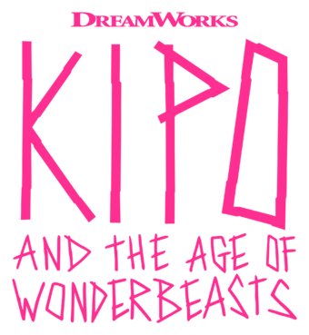

<!DOCTYPE html><html lang="en"></html>
<head><meta charset="utf-8" />
    <meta name="viewport" content="width=device-width, initial-scale=1.0" />
    <link href="styles.css" rel="stylesheet"/></head>
    <body>
      <script src="revamped.js"></script>
        <header>
            
            <nav class="navbar">
                <a href="#">HOME</a>
                <a href="#">ABOUT</a>
                <a href="#">CHARACTERS</a>
                <a href="#">CONTACT</a>
            </nav>
            </header>
    
        <div class="bgimg-1">
          <div class="caption">
          
          </div>
        </div>
        
        <div style="background-color:#f2f2f2;text-align:center;padding:50px 80px;text-align: justify;">
          <h3 style="text-align:center;">KIPO AND THE AGE OF THE WONDERBEASTS</h3>
          <p class="whit">This story is about her adventures in a post-apocalyptic world where animals have mutated into intelligent and diverse creatures called mutes.</p>
          <p class="whit">She is looking for her father, who was separated from her when their underground burrow was attacked by a mega monkey.</p>
          <p class="whit">Along the way, she befriends human survivors Wolf and Benson, and the mutant animals Dave and Mandu.</p>
        </div>
        
        <div class="bgimg-2">
          <div class="caption">
          
          </div>
        </div>
        
        <div style="position:relative;">
          <div style="color:#f2f2f2;background-color:#F22E9A;text-align:center;padding:50px 80px;text-align: justify;">
          <p>It is an American animated television series created by Radford Sechrist and developed by Bill Wolkoff, adapted from Rad's 2015 webcomic Kipo.</p>
          </div>
        </div>
        
        <div class="bgimg-3">
          <div class="caption">
          
          </div>
        </div>
        
        <div style="position:relative;">
          <div style="color:#f2f2f2;background-color:#F22E9A;text-align:center;padding:50px 80px;text-align: justify;">
          <p>The series has been critically acclaimed for its design, characterization, music, world-building, voice acting, and diversity. </p>
          </div>
        </div>

        
        
        <div class="bgimg-1">
          <div class="caption">
          
          </div>
        </div>
      
       <!-- Slideshow container -->
<div class="slideshow-container">

  <!-- Full-width images with number and caption text -->
  <div class="mySlides fade">
    <div class="numbertext">1 / 5</div>
    
  
  </div>

  <div class="mySlides fade">
    <div class="numbertext">2 / 5</div>
    
  
  </div>

  <div class="mySlides fade">
    <div class="numbertext">3 / 5</div>
    
   
  </div>
  <div class="mySlides fade">
    <div class="numbertext">4 / 5</div>
    
  
  </div>
  <div class="mySlides fade">
    <div class="numbertext">5 / 5</div>
    
  </div>

  <!-- Next and previous buttons -->
  <a class="prev" onclick="plusSlides(-1)">&#10094;</a>
  <a class="next" onclick="plusSlides(1)">&#10095;</a>
</div>
<br>

<!-- The dots/circles -->
<div style="text-align:center">
  <span class="dot" onclick="currentSlide(1)"></span>
  <span class="dot" onclick="currentSlide(2)"></span>
  <span class="dot" onclick="currentSlide(3)"></span>
  <span class="dot" onclick="currentSlide(4)"></span>
  <span class="dot" onclick="currentSlide(5)"></span>
</div>


        
        </body></html>